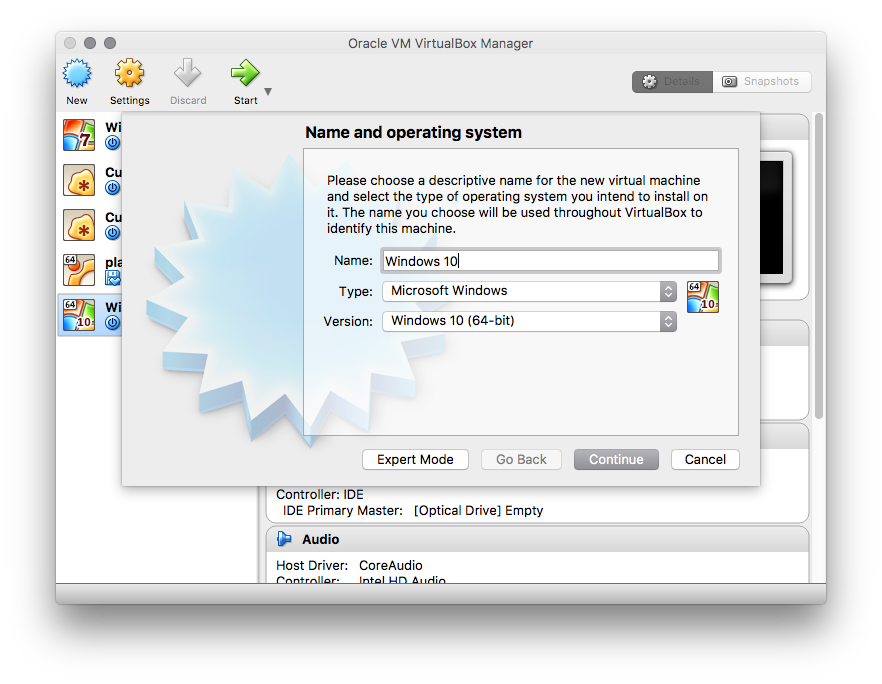
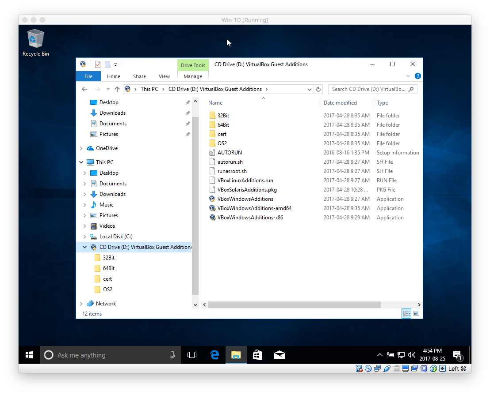
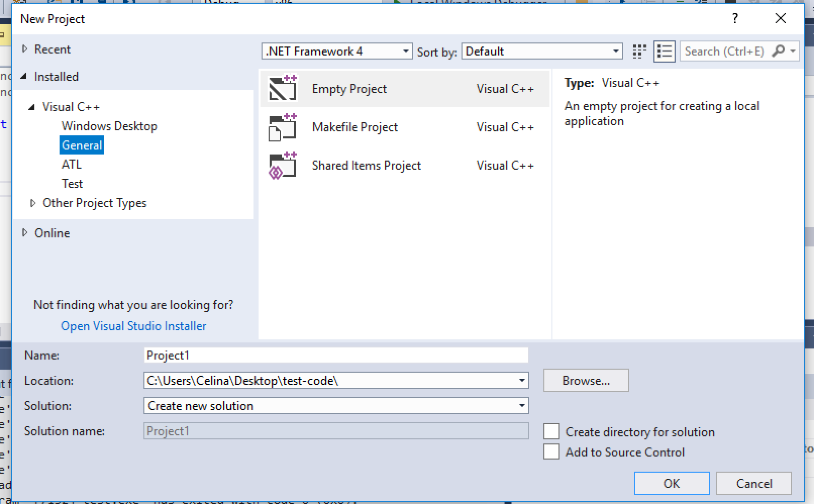

How to run Windows 10 on a Mac using VirtualBox
- Download and install VirtualBox from https://www.virtualbox.org/wiki/Downloads - select the version for "OS X Hosts"
- Download the 64-bit Windows 10 disk image from
https://e5.onthehub.com/WebStore/Security/SignIn.aspx?rurl=%2fWebStore%2fProductsByMajorVersionList.aspx%3fcmi_cs%3d1%26cmi_mnuMain%3dbdba23cf-e05e-e011-971f-0030487d8897%26ws%3dd00cd56c-ae8b-e011-969d-0030487d8897%26vsro%3d8&ws=d00cd56c-ae8b-e011-969d-0030487d8897&vsro=8
- note that you will need to log in with your CWL ID and password. Do not attempt to run the file that you download!
- Start VirtualBox and click the "New" icon to create a new Windows 10 virtual machine. When you are done, the dialog should look as follows: 
- click Continue.
- In the next step, choose the recommended memory size.
- Next, choose "Create a hard disk now", select "VDI (VirtualBox Disk Image)", then select "Dynamically Allocated", set the size to 32GB and click "Create".
- You have two options for logging in to Windows 10: using a Microsoft account or a local account. If you wish to use a Microsoft account, create one now at https://live.com. If you do not wish to create a Microsoft account, disconnect your machine from the Internet at this point - this will prevent the installation process from prompting you for your Microsoft account ID.
- Now select your virtual machine and click the "Start" button.
- You will be asked to select a virtual optical disk file. Navigate to the file that you downloaded from the Microsoft Imagine website and click "Start". Select language and keyboard options then click "Install Now".
- Read and accept the terms of the license agreement.
- For type of installation, select "Custom: Install Windows Only (advanced)" then click "Next". The installation process will then start.
- Follow the prompts during the installation process, selecting "Canada" as your country and US English as the language.
- If you do not wish to use a Microsoft account to log in, select "Skip for now" when prompted to connect to a network. You will then be prompted for your name and password - this is the local account that you will use to log in to Windows 10. Otherwise, log in with your Microsoft account ID and password.
- Follow the remaining prompts for setting up Windows 10.
- If you disconnected your machine from the Internet, now is the time to reconnect it.
- From the "Devices" menu, select "Insert Guest Additions CD Image..."
- Open file explorer and navigate to the CD Drive labelled "VirtualBox Guest Additions" 
- Double-click VBoxWindowsAdditions and follow the prompts to install the software - select all default options. When the process completes, select the option to re-boot the machine.
- When Windows restarts, log in again and then from the "View" menu, select "Full screen mode". You now have Windows 10 running in a full screen on your Mac!
How to install Visual Studio 2017 on a Mac
- Install Windows 10 as described above.
- Start the Windows 10 virtual machine and log in. Open a browser in the virtual machine and go to https://www.visualstudio.com/vs/community/
- Download the Visual Studio 2017 Community Version and run the installation file and follow default settings.
- Follow instructions in Lab 0 to create, compile and run your first program.
- If you do not see the "Visual C++ General" option shown highlighted below, click on the "Open Visual Studio Installer" link and install the Visual C++ option:
- Select the "Help" menu, then select "Register Program"
- Sign into your Microsoft account. If you don't have one, you will have to make one.
- Click on the link "Check for Updated License" and it should update and get rid of the 30-day license!